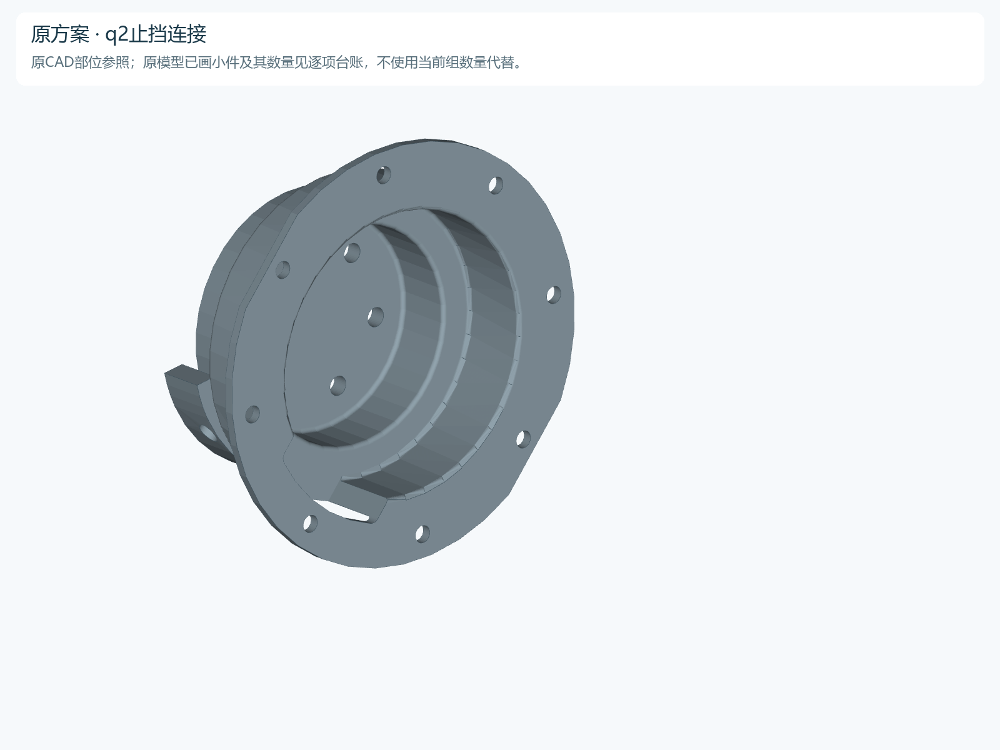

PA35 · 设计主线已确定 · D1
设计MAIN · D1杯式连接
MAIN完整四足已采用D1杯式连接，并取消M1、M3两类独立衬套；本次364→356件。
统一模型计数 · 不含电池包
原CAD基准219→MAIN D1整机356→历史C1候选352
+177MAIN · 当前设计主线
D1杯式连接 · 正式采用
四腿D1杯式连接和M1/M3原件直接适配已合并；原销轴固定保留。完整运动、锁紧与承载继续验证。
MAIN完整整机：396→364→356；本次取消M1四只、M3四只独立衬套。下面原CAD219、R4396、C1352为历史比较。
R4范围：两版均不计电池包。219 → 396；R4电池固定件待设计，未纳入当前数量。原CAD已有机身支撑和紧固件照常计入。
历史三版同一口径 · 当前采用MAIN D1
历史比较：原CAD基准 → R4 → C1
历史对照：原CAD、R4与当时C1候选
当时C1的设计目标：沿用原CAD连接架构适配PA35，减少独立连接件。C1保留作历史对照；当前采用MAIN D1。
历史C1为352个已建模项。 此数量不代表当前MAIN，也不代表原／新实物完整BOM。
哪些部位还没有回到基准数量
点一行，在本页定位到相应部位和前后图。
| 部位 | 原CAD | R4 | C1 | C1−基准 | C1−R4 |
|---|---|---|---|---|---|
| 整机合计 | 219 | 396 | 352 | +133 | −44 |
219是原CAD已画模型的基准，原CAD未画齐的必要紧固件需单独核对、按同完整度比较。优化要减少实物需要的独立件和连接层，不能靠漏画或删模型凑数。
修改前 · 历史R4396正式评审模型
→修改后 · C1待审核352候选模型少44项，均在137之外
历史C1建立过的改型 · 与当前MAIN分开记录
原方案核对结果：原M2、M3本来就有前后端螺钉固定孔，不是只靠短环夹紧。原CAD未画齐这些螺钉。“原模型零件少”不能直接等同“实物不需要这些连接”。本版优先取消适配新增的接缝和衬套。
44项具体减少在哪里
| 变化 | 四腿减少 |
|---|---|
| A/B两件改为一体主支架 | 4件结构 |
| 取消A/B接缝螺钉 | 16颗 |
| 取消相应垫圈 | 16片 |
| 夹座直接匹配，取消M1独立衬套 | 4只 |
| M3辅助定位面并入7007，取消独立衬套 | 4只 |
| 候选模型减少合计 | 44项 |
两端板仍各包含1个固定主体＋2个可拆抱箍，不把一份STEP当成一个物理件；12台电机和原夹紧螺钉保留。
这版还需要验证什么
四腿侧窗均完成实体、孔底保护与就位硬件静态检查；工具与退钉采样仅覆盖RR代表腿，其他三腿路径未全核。本版未合并“B＋7007接桥”，也未叠加M3的12/16项目标；这份历史候选不覆盖当前MAIN；当前MAIN的实际改型见主线。
原M2、M3到底靠什么固定？
| 原部位 | 原件可见固定孔位／腿 | 当前已画壳体固定螺钉／腿 | 核对结论 |
|---|---|---|---|
| M2：7017前／后两侧 | 4＋4 | 4颗 | 原孔轴与原电机前后固定孔对应 |
| M3：7007前侧／7003后侧 | 8＋8 | 前3＋后4＝7颗 | 原两端均有正向螺钉固定孔系 |
原孔位数与当前已画螺钉数分别列出，不能相减当作实物增减；原实物是否装满尚无确认。已对上的24处定子孔轴，在原装配中均未找到对应的独立螺钉实例。原模型少画不代表原结构无需这些连接；2.69 mm短环也不能作为纯摩擦夹持的证据。
查看原CAD孔轴与工程图核对 ↗仍有新增连接层模型差额，含原 CAD 漏画小件已恢复／替换减项同视角、同尺度 · 原CAD含旧电机均为60%基准；当前PA35保持采购尺寸
来源台账：原CAD → 当前正式R4
选中编号后，两图会同步定位同一个装配部位。
原始 CAD 连接方案
219 件原方案 · 60% 基准（电池除外）
历史 R4 评审模型
396 件PA35 · 原架子已恢复
整机模型变化
把整机差额拆到实际安装位置
先找144颗螺钉，再核对为什么净差是137
144当前四腿接口螺钉
＋76 − 83其余连接小件：当前 − 原模型
＝137整个区域的模型净差额
一条腿36颗，四条腿144颗。137不是这张图上另外137只独立零件，也不是可以直接删去137件。
这137项能不能全部精简？
全部纳入评审；目前不能把137项全部取消
137是净差额。当前连接共220项，原CAD画出83项；要把差额归零，须从220减到83，不能靠恢复原CAD漏画的螺钉来实现。
192首轮保留并核查功能有连接用途，不代表已证明是绝对最少
28M3前后固定，优先研究每腿前3＋后4；不等于28颗都可删除
0目前已验证可正式减少此历史评估未删接口螺钉；本次M1/M3减件不在本区
点一组，在下方原位显示该部位的模型前后对比。
展开全部220项的处理，核对为何不能直接删137项
| 连接功能 | 四腿当前 | 首轮处理 | 判断依据 |
|---|---|---|---|
| 合计 | 220 | 192项先保留核查＋28项优先研究 | |
即使假定M3的28项全取消，其他192项还须再减109项，才会回到原CAD的83项。现有最小改动方案没有这样的依据。
查看逐实例功能分类与核对结果 ↗其他分区的精简目标 · 不拿来抵扣137
另有44项目标，全部在137之外
现行整机模型396本次评估没有改件
首轮设计目标352争取减少44项，均在137之外
第二轮 · M3条件探索12 或 16互斥路线的四腿算术上限，尚未证明可净减
同一模型口径，不含电池包。当前数量与目标数量分别展示；本次可直接删除的已证实数量为0。
44项来自哪里：恢复一体主支架，取消A/B接缝及多出的支架36项；M1、M3夹持面直接适配PA35，取消独立衬套各4项。
这137项里，哪些先保留，哪些值得继续研究？
| 连接位置 | 当前四腿数量 | 首轮处理 | 原因 |
|---|
M3前端3颗与后端4颗分别连接不同结构件，需要先重建一条完整传力路线。12或16是两条互斥路线各自取消原螺钉的毛减上限；净减还要扣除新增的替代结构与紧固件，不能相加。
逐部件前后对比 · 留在本页看
图示是一条代表腿；数量同时列出四条腿汇总。
这里对比的是已经发生的适配变化。
同一候选，切换观察：
按原凹杯思路直接适配PA35 · D1右后腿局部真实CAD · 已正式采用为MAIN
已建模：电机内嵌20 mm，M2—M3接口间距14 → 10 mm
这里已从概念示意更新为真实STEP渲染。保留实际PA35原尺寸及M2位置；A/B接缝取消，M3和后端螺钉向内移4 mm。绿色杯体与M3定子固定；M2输出连接杯底，带动整个M3组件。杯壁不与M3输出端固定。
这两台电机到底怎么接：内圈接M2输出，外圈接M3后壳
沿用原件的两条连接路径，适配PA35后改变孔圈和轴向台阶。D1两组连接孔都在杯底；杯口边缘没有另一组电机固定孔。图中蓝、橙圈分别标出实际螺钉轴，未增加孔或改动模型。
| 孔组 | 连接对象 | D1实际接口 | 螺钉拧入方向 |
|---|---|---|---|
| 蓝色内圈 | 内侧M2的输出法兰 | 6 × M4×8，PCD Ø24 mm | 从杯腔朝M2，−Z |
| 橙色外圈 | 外侧M3的后壳螺纹孔（定子） | 4 × M3×6，PCD Ø38.5 mm | 从M2侧朝M3，+Z |
运动关系：M2输出转动 → 杯体和M3整套随动；M3自己的输出再驱动下一级腿部件。M2壳体另由7017固定，M3输出不固定在杯体上。杯壁与M3留间隙，未设计成已验证的过盈、夹紧或定位配合。
与原CAD区别：原7003中央孔组接M2输出，外围孔组接M3定子；D1保持同样功能分工，外圈固定改为PA35的后端4孔，收在杯底PCD Ø38.5，不能把原外围孔原位置照搬到PA35。D1杯口没有新增“第二端固定”。
这张图说明连接对象，不代表已完成锁紧设计。两组螺钉方向相反，M3装入后会遮挡杯腔一侧操作；预装、锁紧、工具进入与拆卸顺序还需闭合。直接读取螺钉STEP平面后确认：M2输出头下平面49.77与新肩49.77名义对齐；M3后端头下平面52.67与新肩52.77相差0.10 mm，当前摆位未贴紧。需要核对螺钉最终就位和有效螺纹深度，不能直接称已夹紧。现有体积无干涉结果不能替代这些检查。本次只补标记图，D1零件数变化0，R4/C1/D1几何均未改动。
看你指出的原CAD凹杯参考（原7003，不是当前PA35主方案）

原CAD参考仅说明结构路线。下面R4/D1两组前后图使用相同镜头和倍率；本图不用于计算尺寸差。
加工件前后：两件加接缝紧固件 → 一个内凹支架
实际电机装入后的显示剖切：同视角、同倍率
空间变化：接口间距缩短4 mm；杯腔内嵌深度20 mm。20 mm不是额外缩短量，两者不能相加。杯体沿轴向包覆电机，支架本身包围盒反而加长；整腿、整机外廓缩短尚未验证。杯内半径比电机最大XY包围半宽大约0.596 mm，这不是已验证的制造公差或全运动最小间隙。
| 本处同一范围 | R4 | C1已算的一体路线 | D1新局部 |
|---|---|---|---|
| A/B连接支架 | 2 | 1 | 1 |
| 接缝螺钉 | 4 | 0 | 0 |
| 接缝垫圈 | 4 | 0 | 0 |
| M2输出6 + M3后端4螺钉 | 10 | 10 | 10 |
| 以上小计（不含电机） | 20 | 11 | 11 |
已采用D1相对R4此处少9件/腿；相对C1额外少0件。同一连接层四腿少36件；已按四条腿各自孔位重建并合入整机，不能再从352里扣36。原219 / R4 396 / C1 352及137差额台账保持原数，当前完整MAIN已合并D1及M1/M3直接适配，356件。
已查：单一有效实体、STEP回读；与M2/M3实际电机、7017、内移7007、M2输出6颗、M3后端4颗、M2壳体4颗共18项D1支架体积干涉检查通过（阈值10⁻⁵ mm³）；M2与内移M3之间体积交叠为0。原外缘止挡材料保留在原位。另做60组移动M3/后端螺钉与固定M2/7017/输出及壳体螺钉的交叉检查，未新增体积干涉。5 mm试做曾发现两组螺钉头互撞，现退至4 mm，失败证据保留。这里只证明所列静态体积关系，不等于完整装配通过。
主线采纳后继续完成：内移后的整条M3侧腿组重建、连杆/止挡对位、相邻零件及全行程检查；实际工具进入与退钉、装拆顺序；螺纹与预紧、强度和制造公差。这版没有验证快拆，也没有继承旧C1的工具路径结论。
回答这张原M2图为什么没看到安装螺钉
原方案有螺钉连接；这处安装螺钉没有画齐
图中只选了蓝色电机模组、灰色7017髋法兰和7003主支架；电机被平移拉开方便观察，实际装配会贴合。蓝色电机内的螺钉细节随整套模组一起计1件，不能代替电机与灰色支架之间的安装螺钉。
固定壳体：7017 ⇄ M2定子原7017前后各有4个对应孔位，孔轴与电机壳体孔匹配；这两组孔轴上没有找到独立安装螺钉实例。
传递运动：M2输出 ⇄ 70037003中央六孔用于输出连接；该图也未独立画出这组螺钉。源输出盘角相位有偏差，不能称六孔装配已验证。
计数结论：219是原CAD已画内容的模型基准，尚不是原机完整实物BOM。不能据219→396就认定实物多了177件；也不能直接从孔位数推定必须装满几颗螺钉。原遗漏螺钉规格、长度和实际用量仍待核实。
看原工程图上的通孔与沉孔依据
图纸为原始100%尺寸，页面结构图按60%基准；原图孔径不直接当作当前PA35螺钉规格。
144颗分组清单
| 安装位置 | 每腿 | 四腿 |
|---|---|---|
| 接口螺钉合计 | 36 | 144 |
四条腿的净差额并不相同
| 腿位 | 原模型 | 当前 | 净差 |
|---|---|---|---|
| 本区合计 | 159 | 296 | +137 |
原CAD各腿画出的连接小件不完全相同，不能把137直接平均到每条腿。
剩下的 −7 从哪里来
查看逐项计数依据与原CAD不对称处
打开逐项审计台账 ↗本次MAIN改型 · 真实部件前后对比
通过修改原件，取消独立衬套
具体改什么
须按新内壁尺寸重做原材料毛坯；不能把现有成品大孔直接镗成小孔。
已检查与仍需验证
M1四只＋M3四只合计少8件：364→356；已合入完整MAIN。
这些件是怎么多出来的
当前处理与原连接思路
查看已有装配依据 ↗同一计数范围加总
177 件的来源在这里闭合
原219 → 当前396，两版均不计电池包；R4固定件待设计。原CAD已有机身支撑和紧固件照常计入。“模型差额”不等于实际新增采购数量；原 CAD 未画全的小件另行核对。
| 部位 | 模型变化 | 性质 |
|---|---|---|
| 合计 | +177 | 原219 → 当前396（电池除外） |